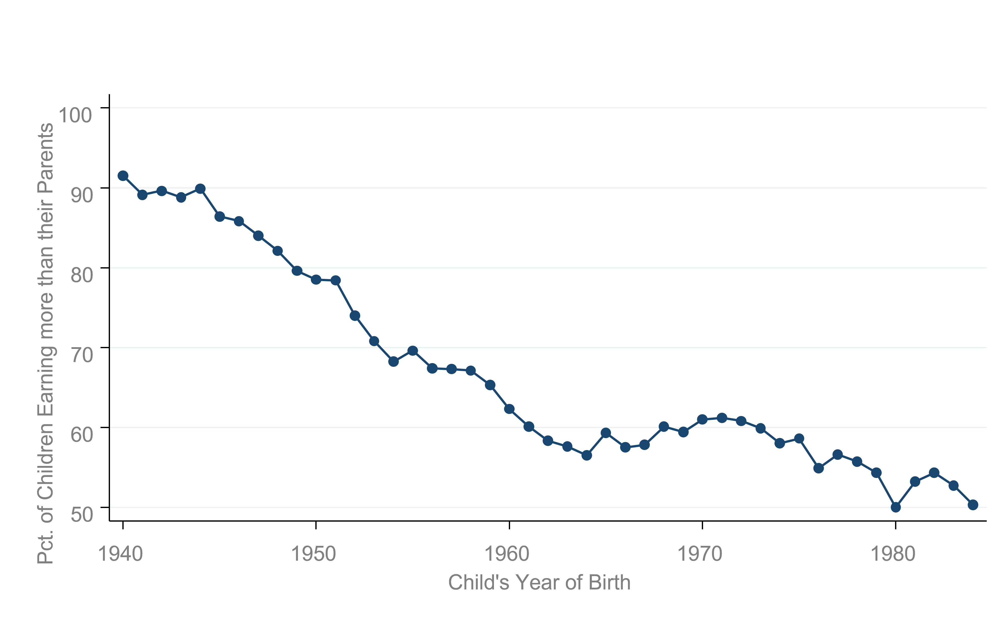

Eco of Public and Social Issues (ECO 3253), Fall 2022
About
Organization of this site
About me
Data-driven course
Topics to be covered
Projects
FAQs
Updated Schedule
I Ec. & Soc. Issues
1
A brief intro
II Tools
2
Very Brief Intro to Data in R
2.1
Why R again?
2.1.1
Why are we learning R? I wanted to learn about economics of public and social issues…
2.1.2
Ok, but why R?
2.1.3
Added benefits of learning R
2.2
Key concepts before we start:
2.2.1
What are R and RStudio?
2.2.2
Installing R and RStudio
2.2.3
Using R via RStudio
2.3
How do I code in R?
2.3.1
Basic programming concepts and terminology
2.4
In Class Exercise
2.4.1
Errors, warnings, and messages
2.4.2
Tips on learning to code
2.5
What are R packages?
2.5.1
Package installation
2.5.2
Package loading
2.5.3
Package use
2.6
Hands-on exercise!
2.6.1
Explore your first dataset: economic mobility in the US
2.6.2
Economic mobility data
2.6.3
atlas
data frame
2.6.4
Exploring data frames
2.7
Conclusion
2.7.1
Additional resources
Appendix
A
Statistical Background
A.1
Basic statistical terms
A.1.1
Mean
A.1.2
Median
A.1.3
Standard deviation
A.1.4
Five-number summary
A.1.5
Distribution
A.1.6
Outliers
By Jon Moreno-Medina
Economics of Public and Social Issues
Chapter 1
A brief intro

Figure 1.1: Source: Chetty, Grusky, Hell, Hendren, Manduca, Narang (Science 2017)